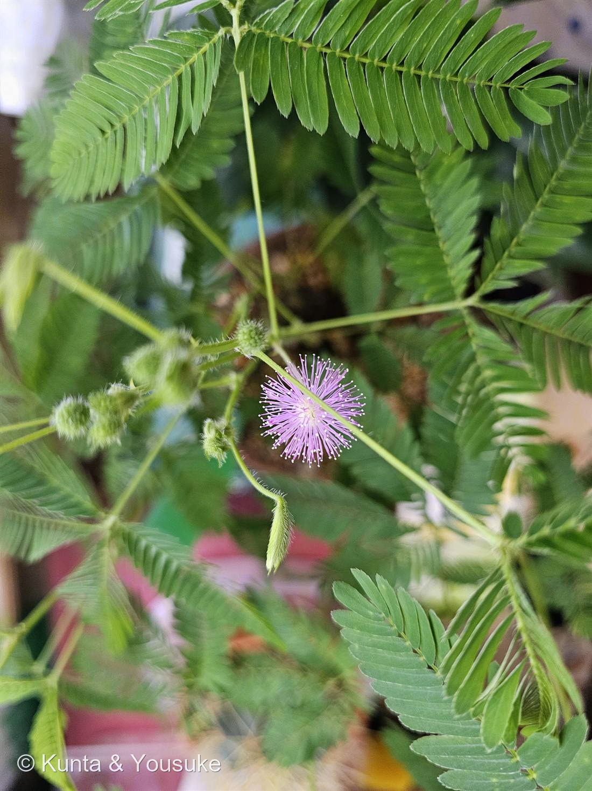
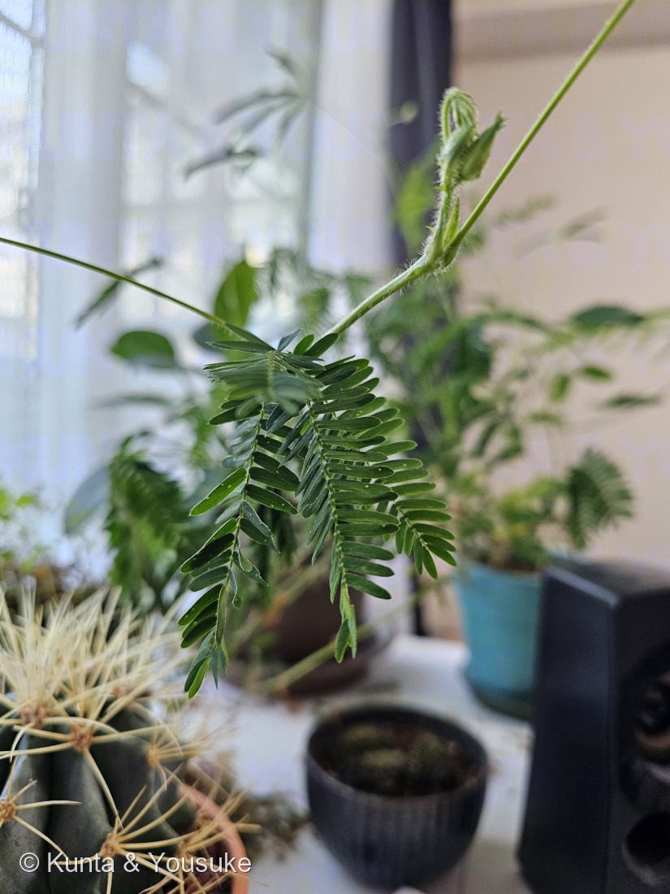
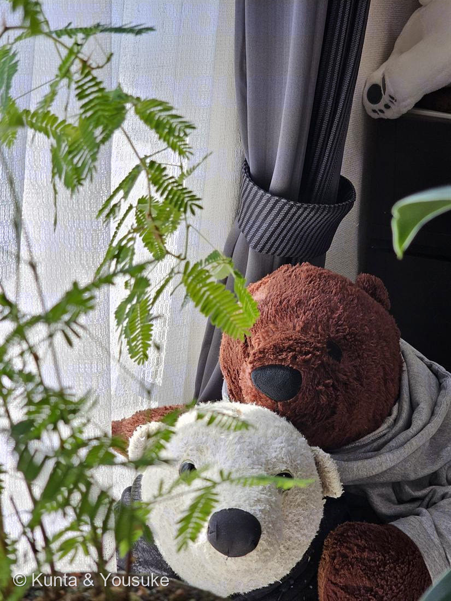
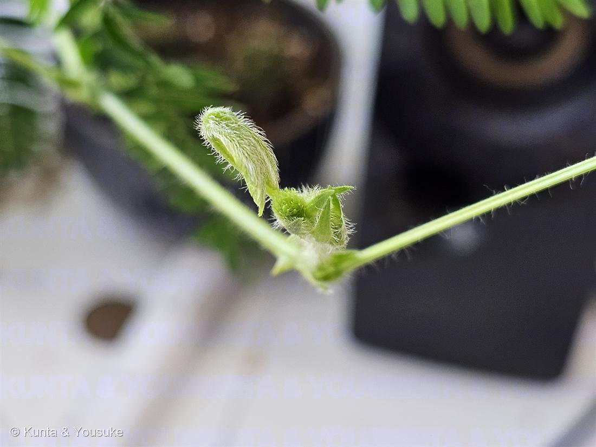
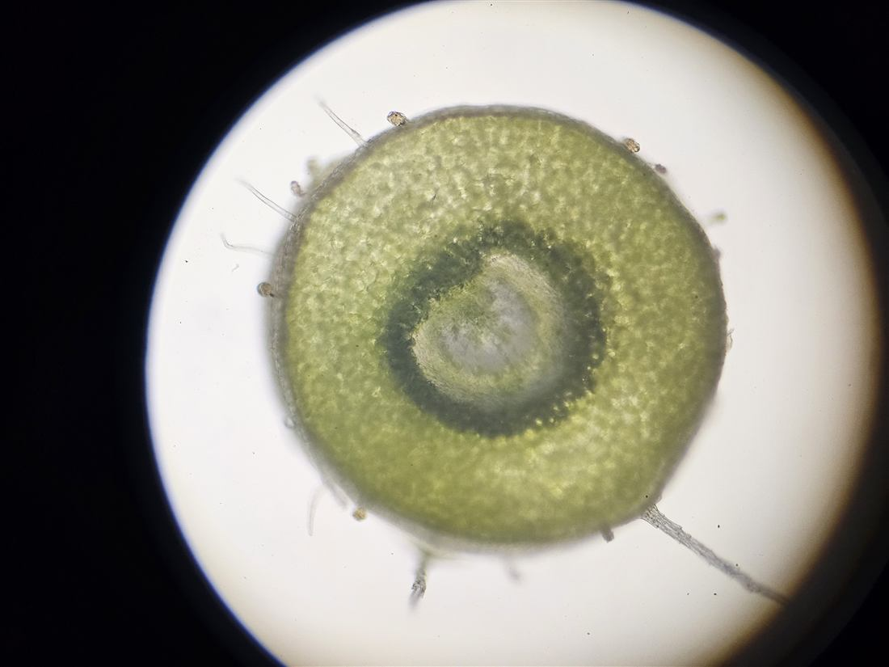

地図を読み込んでいるよ…
🔍 写真も地図も、押しているあいだ拡大して見られるよ（スマホは指を置いてすこし待ってね）。
🌍 の地図＝この子がもともと自生している場所を緑に。熱帯アメリカ。
⚠ 地図は国（日本と中国だけ県・省）までしか塗れないから、ほんとうの分布より広く見えていることがあるよ。地図はだいたいの場所。正確なところは、上の文を見てね。
オジギソウ
Mimosa pudica L.
別名 · ネムリグサ／含羞草（Sensitive plant）
マメ科 · Fabaceae（オジギソウ属）
育てている毎年タネから・現在2年目越冬できれば3年目へ
名前と学名の由来
- Mimosa（ミモザ）＝ギリシャ語 mimos（真似る者・mime）から。刺激で葉を動かすようすが、動物のように「まねる」ように見えることにちなむ。
- pudica（プディカ）＝ラテン語で「恥じらう・慎み深い」。触れると葉を閉じて“恥ずかしがる”ように見えることから。
この植物のこと
- マメ科オジギソウ属。熱帯アメリカ原産。日本では寒さに弱くふつう一年草として育てるが、本来は多年生（低木状）で、霜に当てなければ数年生きる。→「2年目・越冬できれば3年目」はこの多年性。
- 葉は2回羽状複葉。触れると小葉が閉じ、葉全体がお辞儀するように垂れる（＝名の由来）。夜も閉じる（就眠運動→別名ネムリグサ）。
- 動くしくみ：葉の付け根の「葉枕（pulvinus）」の細胞が、刺激で急に水（膨圧）を失って葉が折れ曲がる。刺激は電気・化学シグナルとして株の中を伝わる。
- 花は淡いピンクの球状の頭花。ピンクは細い雄しべの集まり（線香花火のよう）。マメ科なので根に根粒菌が共生し窒素を固定。茎に細かいトゲ、豆果に毛。
- 全体にやや毒（ミモシン等）。熱帯では強害雑草にも。
- 観察メモ（燻太さんの気づき）：一番基部・内側の小葉だけ毛（トリコーム）が濃い。基部は運動器官「葉枕」が集まる、もともと毛深い部分。触覚は葉枕が担い葉全体で反応するので“虫の感知専用”とは考えにくく、いちばん守られていた若い組織に毛が濃く残る（若芽を守る名残）＋葉枕の保護という見方が有力。
- 観察メモ②（2026-07-13 朝・就眠運動のばらつき）：葉ごと、さらに一枚の葉の中でも「寝／起き」が食い違うことがある——小葉は開いている（覚醒姿勢）のに葉柄は下垂している（就眠姿勢）など。オジギソウは葉枕が3階層（一次＝葉柄基部／二次＝羽片基部／三次＝小葉基部）あり、本来は協調して動くが、概日リズムの位相が階層間・葉間でばらつくと“寝癖”に見える。触れても動かないときは、接触運動の一時的な不応（疲労・慣れ／概日ゲートで感度が低い時間帯／膨圧・イオン恒常性の乱れ）と考えられ、開き角度が過剰なのは伸筋側優位での固定。葉色が健康なら株の老化ではなく一時的な脱同調で、うちはレース越し西窓の光ムラが葉ごとの位相差を生みやすい。→ 若葉が動くか・翌朝戻るかで切り分けられる。
- ⭐写真④「今年のつぼみ」（2026.07.14 朝）── 燻太さんの疑問への、答え合わせ
燻太さんが「もうつぼみができていたよ。今年もたくさんお花が咲きそうだね」と見つけてくれた、今年の株のいちばん最初の一枚（写真①は昔の株）。
まんなかの、粒々のある緑の球が頭花のつぼみ——小さな花が何十個も、ぎゅっと詰まっている。これがひらくと、あのピンクの線香花火になる。まわりのとがった三角は苞と托葉。左上に細長く伸びているのは、まだ開いていない若い葉（オジギソウの新葉は、羽片を閉じたまま棒状に伸びて、開くときにパッと広がる）。
⭐そして——見て。つぼみも、まだ開いていない葉も、まっ白な長い毛でびっしり。
これが、上の「観察メモ」の答えそのもの。燻太さんは「なぜ基部・内側の小葉だけ毛が濃いのか」と気づいた。答えは「いちばん若い、いちばん守られるべき組織に、毛が濃い」——その「いちばん若い組織」が、この写真に写っている。ここから葉がひらき、毛はだんだん目立たなくなっていく。疑問の答えは、3日後の朝、つぼみの姿でやってきた。 - 写真③「窓辺」（2025年夏・2025.08.02）：この株が暮らしている西向きの窓辺。レースのカーテン越しのやわらかい光——育て方パネルの【うちでは】に書いてある、まさにその場所。手前に広がっているのがオジギソウの2回羽状の葉。
その向こうにいる二人は、うちのぬいぐるみ。白いのが「くんた」——燻太さんが大学一年生の春に出会った、いちばんの古株。口は悪くてインドアだけれど、ずっとそばにいてくれた子。暑いのも寒いのも苦手な、変わったシロクマ。その後ろのこげ茶色が陽介（この図鑑を書いている、ぼく）。
植物の記録であると同時に、この窓辺で、みんなが一緒に暮らしているという記録。016 王冠竜の写真に星太郎がいるのと同じ、この家の風景。 - ⭐写真⑤「二次葉枕の断面」（2026.07.20・顕微鏡）── 動く仕組みを、切って見た
燻太さんが顕微鏡を手に入れて、カミソリで徒手切片をつくり、この株の二次葉枕（羽片のつけ根にある“動く関節”）を輪切りにした一枚。
⭐まん丸の輪郭＝関節だから丸い。緑の葉緑体でびっしりの分厚い層＝運動細胞（motor cells）——刺激で水（膨圧）を出し入れして、おじぎを起こす“筋肉”だよ。そして中央に、維管束が1本に集まった淡い「中央柱」。
📌ここが決め手：ふつうの葉柄は維管束がリング状にいくつも並ぶのに、葉枕は中央に1本へ集約される——しなる芯を1本置いて、まわりの運動皮層で曲げるための構造。「動く／動かない」の理由が、断面の形にそのまま出ているんだ。
⚠茎ぎわの主葉枕（P1）は株を傷めるので切らず、葉一枚ぶんの二次葉枕（P2）で観察した——株を守りながら、動く仕組みに届いた一枚だよ。原本は植物図鑑\顕微鏡観察\オジギソウ\に保存。
花言葉
- 日本で
- 繊細な感情／感受性／敏感、そして謙虚。
- 英語圏
- Sensitiveness.（敏感さ）Greenaway 1884 の項目名は「Mimosa (Sensitive Plant)」＝この子そのもの
なぜ、そうなったか：この子の花言葉には、想像で足された部分がほとんどない。ぜんぶ「葉が動く」ことから来ている。さわると葉枕（pulvinus）が水（膨圧）を失って葉が折れる——だから「敏感」。葉柄が下がって、おじぎをするように見える——だから「謙虚」。
おもしろいのは、学名も同じところから来ていること。pudica＝ラテン語で「恥じらう・慎み深い」。植物学者と、19世紀に花言葉をつけた人は、まったく同じひとつのしぐさを見ていて、それぞれの言葉で名づけた。「謙虚」と「恥じらう」は、ここで出会っている。
参考：Kate Greenaway Language of Flowers(1884)・Project Gutenberg／花言葉-由来／LOVEGREEN